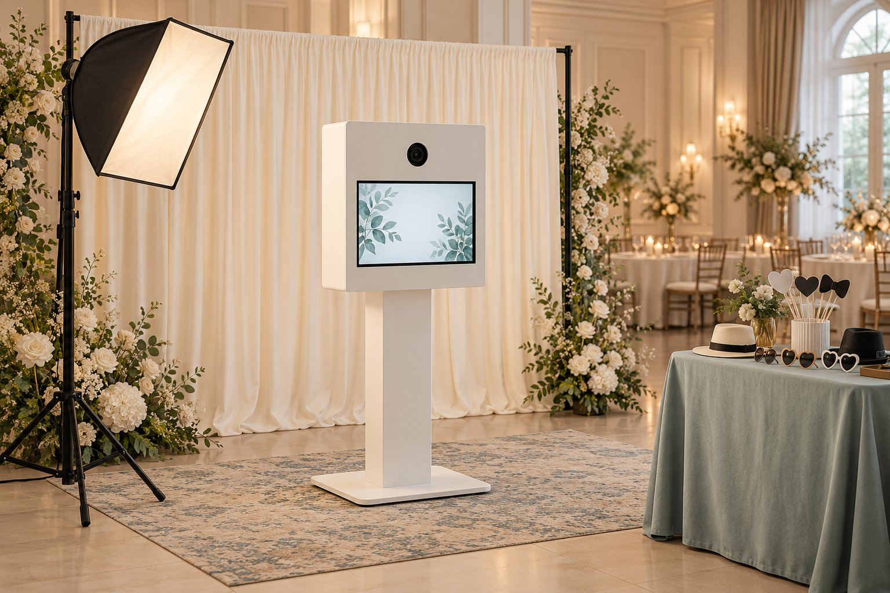

Wondering how much room a wedding photo booth needs, where it should go, or what to ask your venue? Start with the floor plan. A photo booth needs more than an empty corner: plan for a backdrop, a power source, guest traffic, and access for setup.
Quick answer: For a Handsome Photobooth open-air setup, plan for approximately 10 ft × 10 ft for the booth, backdrop, and prop table, plus extra space for guests waiting their turn. We need one standard power outlet within reach. The exact layout depends on the venue, so send us your floor plan before finalizing placement.
Wedding photo booth setup requirements at a glance
| Requirement | What to plan for |
|---|---|
| Booth area | Approximately 10 ft × 10 ft for equipment, backdrop, and props, with a separate waiting area. |
| Power | One nearby standard outlet, with an agreed cable route outside guest walkways. |
| Wi-Fi | Helpful for QR downloads; ask about hotspot reception and the digital-sharing backup plan. |
| Access | Vendor entrance, parking, elevators or stairs, and the approved setup and breakdown window. |
| Outdoor option | Appropriate shelter, reliable power, and an indoor backup location. |
Already have a wedding venue? See our Bay Area wedding photo booth package or send us your date and venue to discuss setup.
1. How much space does a wedding photo booth need?
The 10 ft × 10 ft estimate is for the booth, backdrop, and props, not the entire guest queue. On your reception floor plan, mark the equipment area and a separate route for guests waiting, entering, and leaving. A corner that looks spacious in an empty-room photo may be much tighter after tables and chairs go in.
- Measure usable space after tables, chairs, decorations, and service stations are placed.
- Keep emergency exits, accessible routes, and catering pathways clear.
- Leave enough room for group photos without blocking the next guests in line.
- Check for room flips, movable walls, doors, or curtains that may change the layout.
2. Where should you place the booth at a wedding?
Look for a visible, easy-to-reach location that does not create a bottleneck. An area near reception activity can help guests find the booth, but placing it directly in a narrow bar line or hallway may interfere with the flow of the event. Ask your coordinator to consider the backdrop and the waiting line as one part of the plan.
If the booth is near dancing or entertainment, confirm lighting and foot traffic with the venue. If it is in an adjacent room, make sure it will be easy for guests to find.
3. What power does a wedding photo booth need?
Handsome Photobooth requires one standard outlet within reach of the setup. Have the venue identify an available outlet and confirm it can be used during setup and operation. Discuss any cable covers or extension cords with the venue and photo booth team before the event.
Do not assume it is safe or practical to run a power cord across a busy doorway. If several vendors plan to use the same electrical area, the venue should confirm that the arrangement is suitable.
4. Does a wedding photo booth need Wi-Fi?
Venue Wi-Fi is helpful for QR downloads and digital sharing. Handsome Photobooth can use a mobile hotspot when Wi-Fi is limited, depending on local cellular signal. Tell us ahead of time if the setup is in a basement, remote garden, or another area where reception may be weak.
Ask how photo-taking, printing, and online delivery will be handled if connectivity drops. These are different parts of the experience, so confirm the plan rather than assuming everything relies on the same connection.
5. Confirm vendor load-in, setup time, and paperwork
Our usual planning guidance allows about an hour before the event for setup, but confirm the timing for your specific booking. Share the vendor entrance, loading area, parking instructions, elevator or stair access, and who can approve the final placement.
At Bay Area venues, the guest entrance and vendor entrance may be different. Ask your coordinator about loading restrictions, long equipment routes, insurance-document requirements, and the time the equipment must be removed after the event.
6. Make an outdoor setup and weather backup plan
Outdoor weddings require a separate conversation about the venue's conditions. Wind can affect the backdrop and props, direct sun can affect lighting, and rain or moisture means a protected alternative is necessary. Do not choose a patio location from photographs alone.
Confirm an appropriate sheltered location, a usable outlet, and an indoor backup. Have the venue and booth provider agree on the final spot rather than assuming an outdoor wedding package automatically includes a suitable location for electronic equipment.
7. Match photo booth hours to the reception
Choose operating hours when guests are likely to participate. Cocktail hour and time around dancing can be good options, while a formal dinner or speeches may pull guests away. Coordinate any pauses in advance. For examples, read our guide to when to open the photo booth at your wedding.
Copy-and-send checklist for your wedding venue
Share these questions with the venue coordinator as soon as your floor plan is reasonably settled:
- Can we reserve approximately 10 ft × 10 ft for the booth, backdrop, and props, plus separate queue space?
- Where is the nearest available standard outlet, and how should cables be routed?
- Which loading entrance, parking area, and elevator should the vendor use?
- What setup and breakdown access windows are permitted?
- Are insurance documents or other vendor forms required?
- Is Wi-Fi available, and is cellular reception reliable in the proposed location?
- If outdoors, where is the protected setup and indoor weather backup?
- Who is the day-of venue contact for final placement questions?
Wedding photo booth setup FAQs
Is a 10 ft × 10 ft space enough?
It is the approximate equipment footprint for our open-air setup. You still need additional space for guests waiting in line. Send us your floor plan if the area is tight.
What if our wedding venue has unreliable Wi-Fi?
Let us know in advance. We can discuss hotspot availability and how digital sharing will work if the connection is limited.
Can a photo booth go outside?
Possibly, depending on the conditions and protection available. Ask us to review the proposed outdoor location and indoor backup with your venue.
When should we finalize the placement?
As soon as your reception floor plan and schedule are stable, share the proposed spot with the venue and photo booth team so power, access, and guest flow can be confirmed.
Planning a Bay Area wedding? Explore our wedding photo booth service and ask about availability for your date. Comparing budgets? Read our wedding photo booth cost guide.